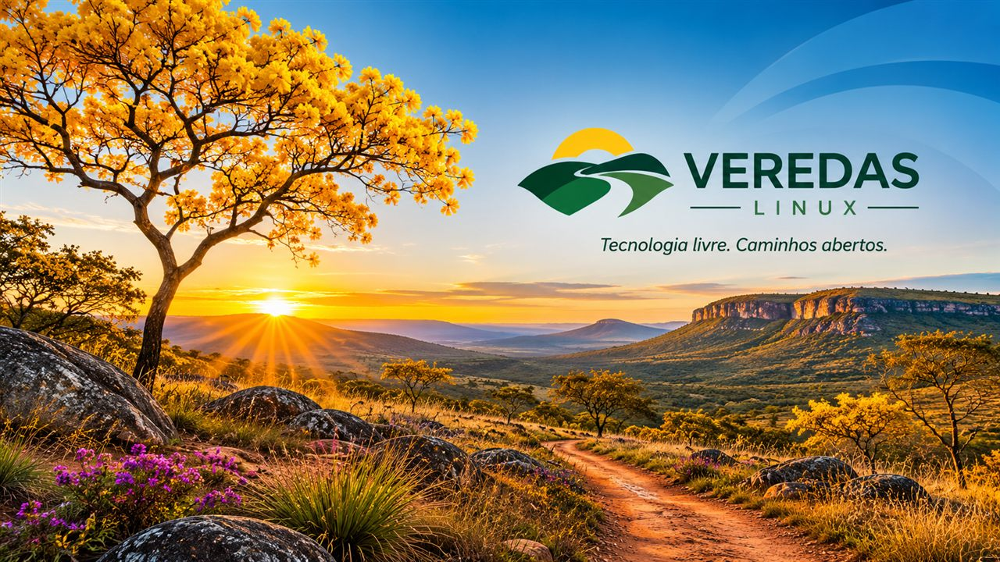
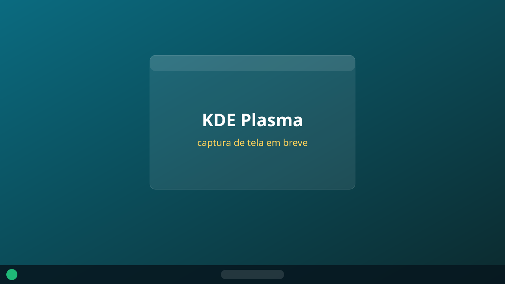
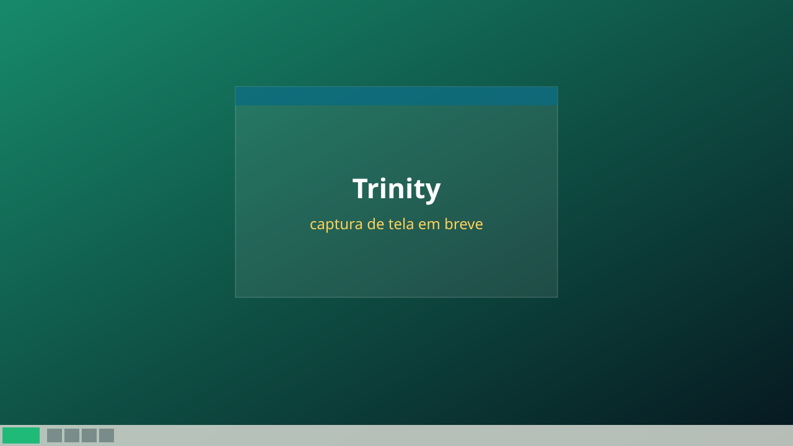

Sem snap
O snap vem bloqueado, como no Linux Mint. Os programas são instalados como pacotes .deb tradicionais ou pelo Flatpak.
Versão 1.00 · baseado no Ubuntu 26.04 LTS
Tecnologia livre. Caminhos abertos.
Uma distribuição Linux brasileira, pronta em português desde o primeiro boot, com duas edições de área de trabalho: KDE Plasma e Trinity.

Sobre o sistema
O Veredas é baseado no Ubuntu 26.04 LTS (“Resolute”), para computadores de 64 bits (amd64). Usa o kernel HWE e os repositórios oficiais do Ubuntu (main, restricted, universe e multiverse), então recebe as mesmas atualizações de segurança e suporte de longo prazo.
A ISO é gerada por um script próprio, no mesmo modelo do Linux Mint: o sistema é montado do zero com debootstrap, configurado dentro de um chroot, compactado em squashfs e empacotado numa ISO híbrida que dá boot tanto em BIOS quanto em UEFI.
O nome
Vereda é um caminho estreito, uma trilha que se abre no meio do mato. Também é o nome das veredas do cerrado brasileiro, com seus buritis e nascentes. O logo mostra dois caminhos que se encontram formando o “V”, com o sol nascendo entre eles.
O nome também vem de uma passagem da Bíblia:
“Confia no Senhor de todo o teu coração, e não te estribes no teu próprio entendimento. Reconhece-o em todos os teus caminhos, e ele endireitará as tuas veredas.”
Provérbios 3:5-6
Diferenciais
O snap vem bloqueado, como no Linux Mint. Os programas são instalados como pacotes .deb tradicionais ou pelo Flatpak.
O Firefox vem direto do repositório oficial da Mozilla, já em português, e não como snap.
O Flathub já vem configurado, com acesso a milhares de aplicativos sem precisar mexer em nada.
Português do Brasil, teclado ABNT2 e fuso horário de São Paulo já definidos na instalação.
Por baixo é Ubuntu: tutoriais, pacotes .deb e PPAs do Ubuntu funcionam normalmente.
Vem com o netdiscover, para descobrir os dispositivos da sua rede local.
Edições
As duas edições têm a mesma base, os mesmos drivers e o mesmo instalador. Muda só a interface gráfica: escolha a que combina com você e com o seu computador.

Moderna e completa. A área de trabalho Plasma 6, com visual Breeze, funciona em X11 e Wayland.
ISO de ~1,75 GB

Clássica e leve. O Trinity (TDE 14.1) é a continuação do KDE 3.5, ideal para computadores mais antigos. Roda em X11.
ISO de ~1,38 GB
Configurações do sistema
| Áudio | PipeWire |
|---|---|
| Rede | NetworkManager, Wi-Fi (wpasupplicant) e systemd-resolved |
| Bluetooth | BlueZ |
| Hardware | linux-firmware e microcódigo Intel e AMD |
| Navegador | Firefox (.deb oficial da Mozilla, em português) |
| Programas | Flatpak com Flathub; Discover (Plasma) ou Synaptic (Trinity) |
| Discos | Suporte a NTFS, exFAT e FAT; zip, unzip e zstd |
| Fontes | Liberation, DejaVu e Noto Color Emoji |
| Gráfico | Xorg; Wayland também na edição Plasma |
| Boot | GRUB com Secure Boot (shim assinado) e Plymouth |
| Região | pt_BR.UTF-8, teclado ABNT2, America/Sao_Paulo |
#1fb978#0b6b80#0c2a2e#ffd25aLive boot e instalador
Dê boot pelo pendrive e o Veredas abre direto na área de trabalho, sem instalar nada e sem pedir senha. Você usa o sistema de verdade e, quando quiser, clica no ícone “Instalar o Veredas”.
O menu de boot oferece:
A instalação é guiada, em poucos passos, com as cores do Veredas:
Requisitos
No VirtualBox, use pelo menos 4 GB de RAM e 25 GB de disco.
Grave a ISO com o Rufus (escolha o modo DD) ou copie para um pendrive com Ventoy.
Atenção: a ISO live ainda não é assinada para Secure Boot. Para dar boot pelo pendrive (ou no Hyper-V), desligue o Secure Boot. Depois de instalado, ele pode ser ligado de novo.
Download
veredas-1.00-amd64.iso · ~1,75 GB
Baixar edição Plasmae0c0efe8a65e40d02e087a69caef40d97bf153c762bc5e3d0a3f7f4a70690d9e
veredas-1.00-amd64-trinity.iso · ~1,38 GB
Baixar edição Trinity5cc1377b4769238e5ce9eef50685a277ad0367791fb51f07cbc0b58218fcc767
Para conferir o arquivo baixado: no Linux, rode sha256sum veredas-1.00-amd64.iso; no Windows, certutil -hashfile veredas-1.00-amd64.iso SHA256. O resultado tem que ser igual ao código acima.
Apoie o projeto
O Veredas é gratuito e feito por uma pessoa só. Uma doação, de qualquer valor, ajuda a pagar o tempo de desenvolvimento e os testes de cada nova versão.
Leia o QR code no app do seu banco, use o PIX copia e cola ou a chave aleatória.
00020126820014br.gov.bcb.pix0136fa1e3c91-b0db-4ddb-8986-3a5a8ab546a80220Doacao Veredas Linux5204000053039865802BR5913VEREDAS LINUX6009SAO PAULO62070503***63049732
fa1e3c91-b0db-4ddb-8986-3a5a8ab546a8
bc1qcu2jwqzzg6tur6nnw843fsr3t6umtg545jtpu5